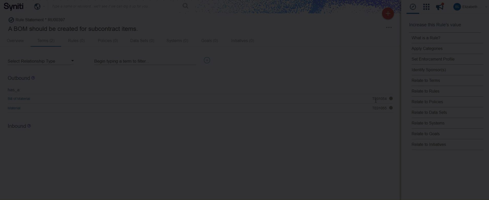

A GIF looks like a video, but behaves like an image. It’s a short, 3-5 second, no audio video, that plays automatically and continuously loops.
Both pronunciations are correct - use what sounds right to you.
Use GIFs in the online help as supplemental material to enhance instructions. They can be very helpful when trying to explain to a user where to go in the UI that may be verbose to explain or just difficult. For example, in the Knowledge Tier, not everything has a name. We sometimes find ourselves saying, “click the grey circle icon next to the record on the right-hand side” or “click the ellipses (...) icon at the top of the page.” Situations like this could greatly benefit from a simple GIF to point the user in the right direction without writing down all the steps.
Here are some other use cases for GIFs:
If a process seems simple, yet has a lot of steps
To illustrate how one thing change another, such as a check box or a list box that impacts something else in the UI
As a mini-demo - excellent for demonstrating list boxes or check boxes with unique (or unexpected) functionality
Use GIFs to demonstrate a process that has 2-5 steps
Keep GIFs to 3-7 seconds. If the GIF is approaching 10 seconds, consider breaking it up into 2 GIFs or creating a video
Click the Fade to Black check box when you’re creating the GIF so it’s clear to users when the GIF ends and starts to loop again. If you don’t like that option, avoid having the GIF start and end in the same frame so there isn’t an awkwardly long frame when it loops.
Select just the part of the screen that contains the steps you need. Don’t show the entire screen. This helps to keep the focus on the action and limit the file size.
Include a text introduction before a GIF
Use whatever program you’d like to create a GIF either from an existing video or from scratch. We recommend either one of these - click to view a tutorial:
Recommendation: Snagit has limited gif settings compared to Camtasia, but it is easier and quicker to use. Use whatever program is easiest for you, but the recommendation is Snagit.
TIP: If using Snagit to create a GIF, be sure to set the Optimize For: setting to Custom. Also, ensure both Looping and Fade to Black are checked; the default values can be used for the other settings.

Want to learn more about GIFs? Checkout these online resources: